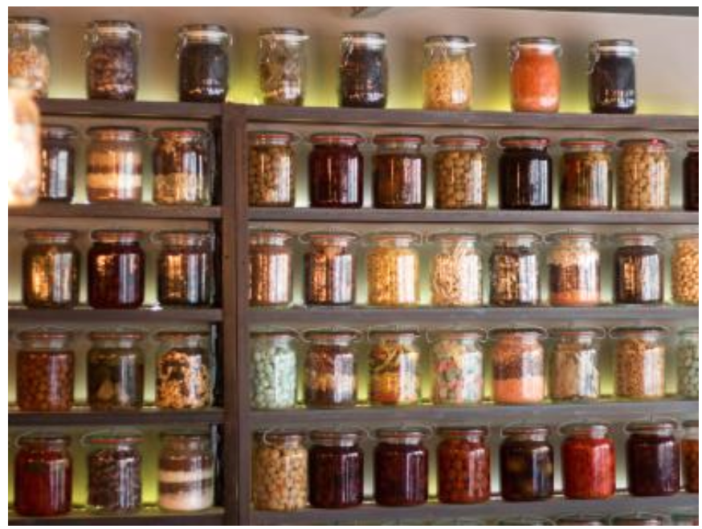
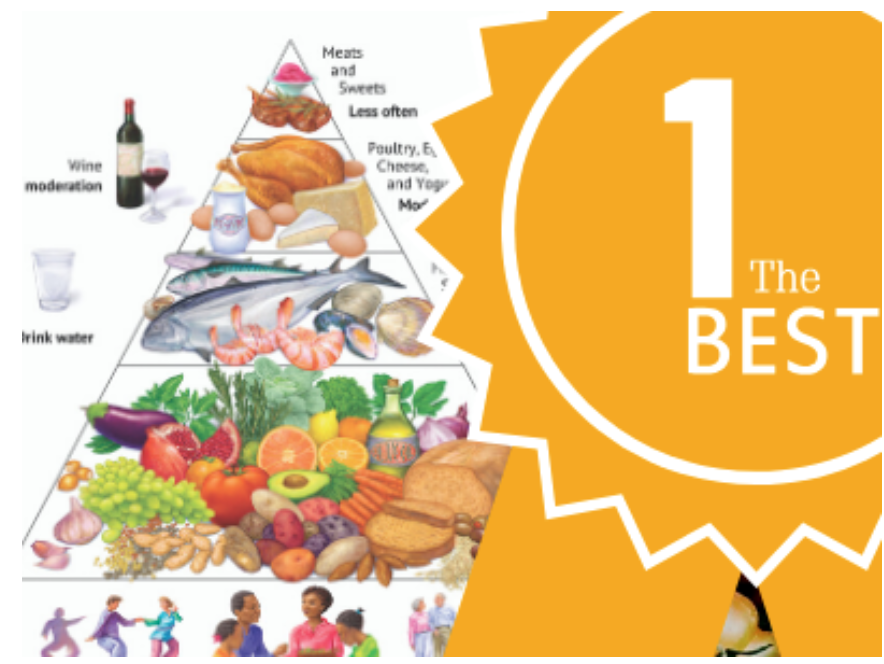

goodness
goodnessLatest Blog Post
MARCH 09, 2020
THE SICILIAN MEDITERRANEAN DIET
Sicily is the largest island in the Mediterranean , just off the ‘toe’ of Italy’s boot. It has an inherent beauty to it—a bit rustic and rough around...
FEBRUARY 24, 2020
THE HEART-HEALTHY MEDITERRANEAN DIET
Since February is American Heart Month , what better way to celebrate than with the Mediterranean Diet —the #2 best diet for cardiovascular health,...
JANUARY 27, 2020
COZY UP WITH HEARTY SOUPS INSPIRED BY THE FLAVORS OF PORTUGAL
With the Oldways culinary tour in Portugal just around the corner on March 22-29, 2020, it’s time to put a spotlight on the soups of Portugal. When...
FEBRUARY 14, 2020

MEAL PREP 101: 8 KITCHEN TOOLS TO HELP YOU PREP A WEEK OF HEALTHY MEALS
Long days at the office, after-school activities, rush hour traffic…sometimes, it feels like there are so many obstacles preventing you from cooking...
JANUARY 27, 2020
COZY UP WITH HEARTY SOUPS INSPIRED BY THE FLAVORS OF PORTUGAL
With the Oldways culinary tour in Portugal just around the corner on March 22-29, 2020, it’s time to put a spotlight on the soups of Portugal. When...
JANUARY 22, 2020
MY DOCTOR RECOMMENDED THE MEDITERRANEAN DIET. WHAT DO I DO NOW?
Many people hear about the Mediterranean Diet from their doctors. Whether for weight loss, better nutrition, or to reduce the risk of cardiovascular...
JANUARY 27, 2020
PRESERVING MEDITERRANEAN DELICACIES
While methods of food preservation have evolved from antiquity to modern times, the purpose of food preservation has remained constant—to extend the....
JANUARY 07, 2020

5 WAYS TO CELEBRATE BLACK HISTORY MONTH
Click on any of the infographic images to download. Feel free to print, save, and/or share on social media! 1. Cook with more African Heritage...
JANUARY 02, 2020
US NEWS & WORLD REPORT NAMES THE MEDITERRANEAN DIET #1 BEST DIET
Once again, the U.S. News and World Report has named the Mediterranean Diet #1 in Best Diets Overall. Rich in plant-based foods, whole grains, beans....
DECEMBER 30, 2019
MEDITERRANEAN VEGETARIAN MEALS
The heart and soul of the Mediterranean Diet is whole plant foods, that is, an assortment of splendid, seasonal fruits and vegetables alongside...
Olways
266 Beacon Street Suite 1
Boston , MA 02116
TEL 617-421-5500
FAX 617-421-5511
info@oldwaysspt.org